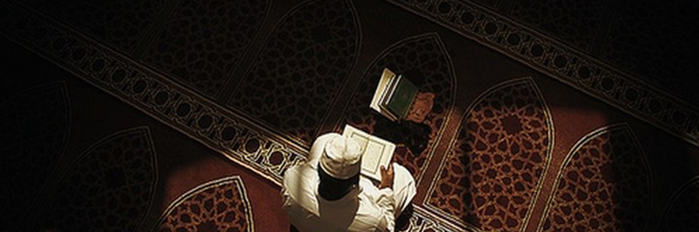
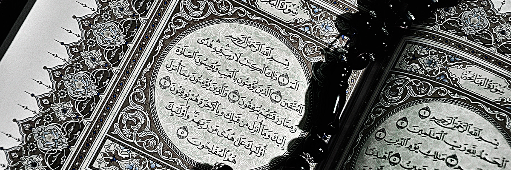
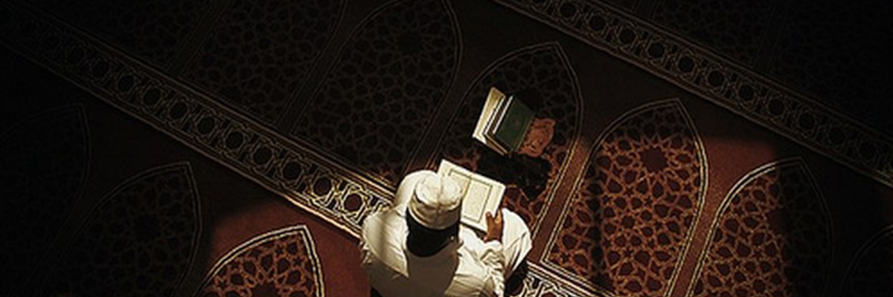
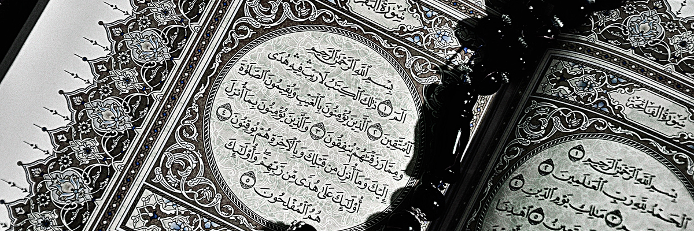

H.Zaenal Abidin
Ustadz H. Zaenal Abidin (34 tahun) menjadi sosok yang menginspirasi generasi muda, berkat kegigihan dan perjuangannya untuk meraih prestasi tertinggi , bahkan meski harus berjuang ‘sendirian’ dan mengalami persaingan yang ketat. Rekam jejak yang terliput media, sebagaimana di antaranya dimuat oleh laman Radar Tasikmalaya, dapat menjadi contoh nyata. Setahun lampau, pada 29 Agustus 2015, ustadz muda yang rendah hati ini mengikuti musabaqoh tingkat dunia di Masjid Istiqlal Jakarta, yang diselenggarakan oleh Kementrian Agama RI. Undangan via email dari Kemenag Propinsi Jawa Barat diterimanya pada 26 Agustus 2015. Ia kemudian berangkat untuk mengikuti kegiatan tersebut dengan biaya sendiri, tanpa sponsor lembaga mana pun maupun pemerintah. Laman fokusjabar.com bahkan menggambarkan kepergian Sang Ustadz tersebut sebagai 'kisah pahit' karena sempat mengalami 'ngeteng' naik Bus Budiman dan hanya membawa bekal uang pas-pasan.Ia akhirnya meraih gelar Juara I pada ajang tersebut, mengalahkan finalis kedua dari Filipina dan finalis ketiga dari Iran. Ketiganya merupakan yang terpilih dari seleksi ketat atas 21 peserta dari 11 negara. Hadiah uang yang diterimanya kemudian dipergunakan untuk mengembangkan lebih lanjut Ponpes Nurul Jannah di kampung halamannya, yang dirintisnya sejak tahun 2012 dengan dana mandiri dan swadaya masyarakat setempat.
Ustadz H. Zaenal Abidin menjadi contoh proses perjuangan yang membutuhkan ketekunan dan kesabaran, bukan peraih keberhasilan dadakan atau instan. Ia mengaku mulai belajar mengaji sejak di bangku sekolah dasar pada tahun 1995, ketika menjadi santri di Pesantren Arriyadhoh, Desa Budiharja, Kecamatan Sindangkasih, Ciamis. Ia kemudian melanjutkan pendidikannya di MAN Gegempalan, yang terletak di komplek Ponpes Gegempalan, Desa Maparah, Kecamatan Panjalu, Ciamis. Tahun 2006, ia sempat menimba ilmu di Ponpes Miftahurrohmah, Malangbong, Garut. Proses pendidikan dan latihan yang panjang telah membentuk kemampuannya yang luar biasa.Ustadz yang mengaku terkesan dengan negara Turki, saat mengunjungi negara tersebut untuk mengikuti MTQ Internasional baru-baru ini (dan meraih Juara I dengan menyisihkan pesaing dari 40 negara) tak henti memberi motivasi siapa pun untuk terus belajar tajwid dan membaca Al-Quran. “Alhamdulillah, bersyukur sekali bisa di sini. Turki juga negeri yang sangat indah. Semoga ke depannya lebih bisa menjaga dan mengamalkan Al-Quran," tuturnya dalam wawancara dengan media televisi setempat.